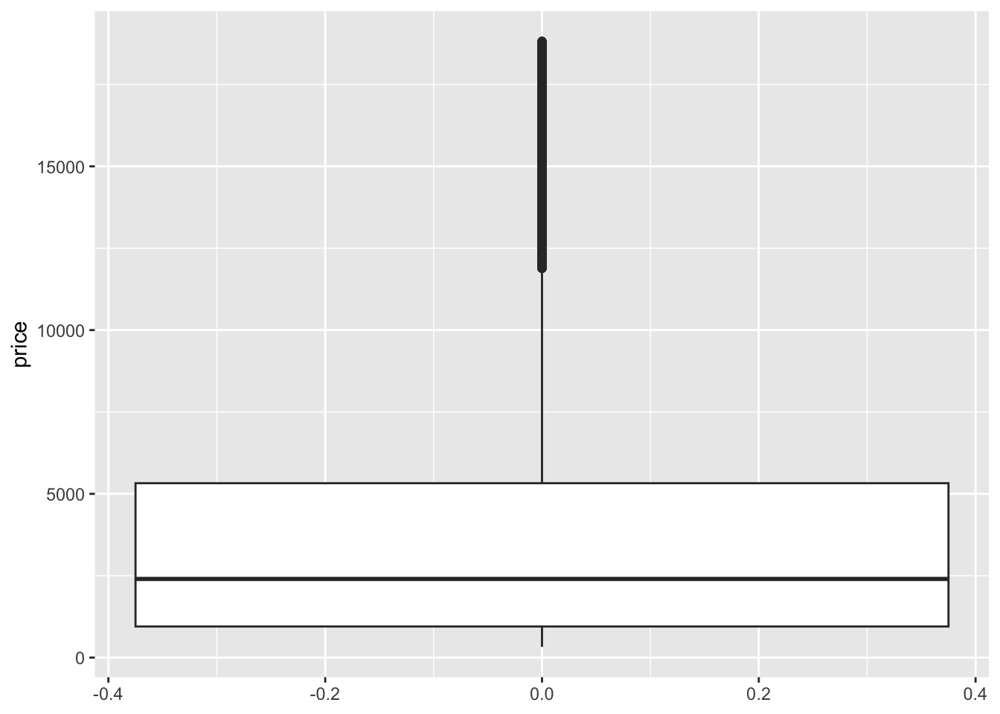
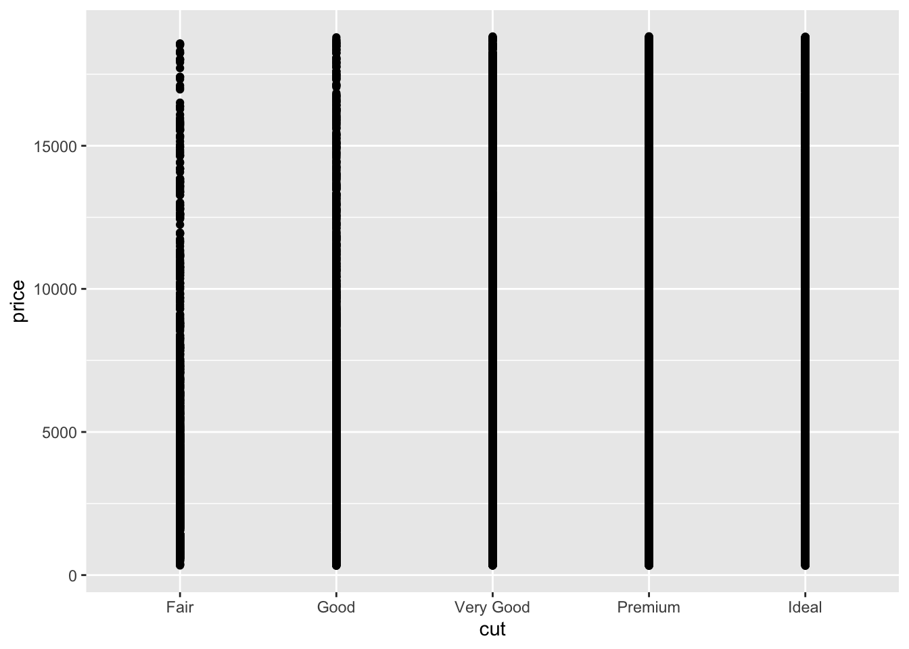
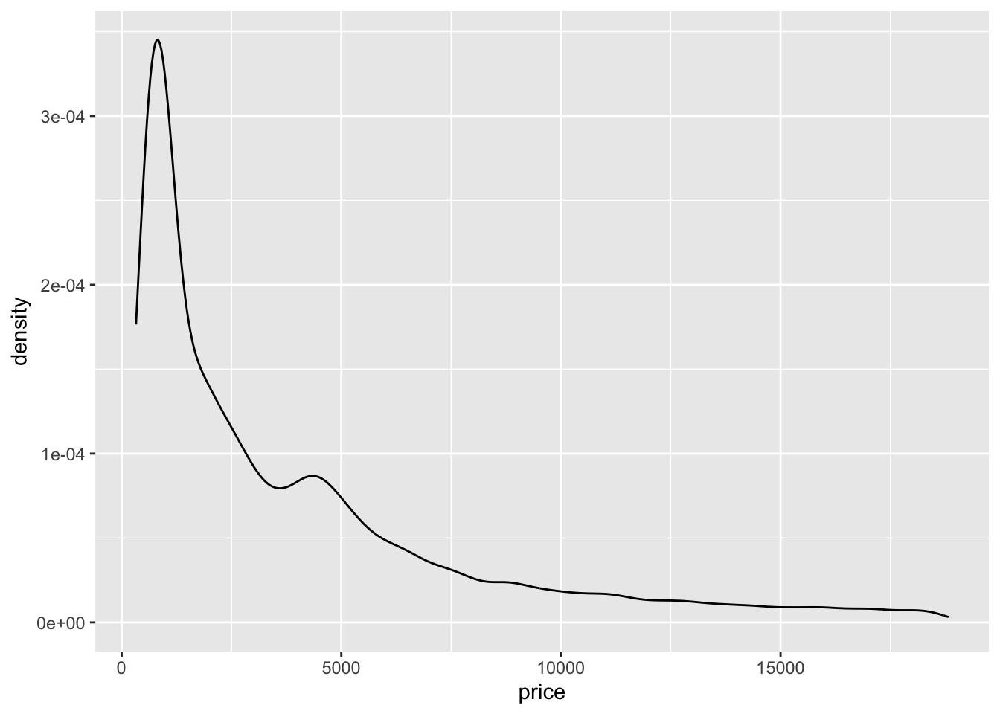
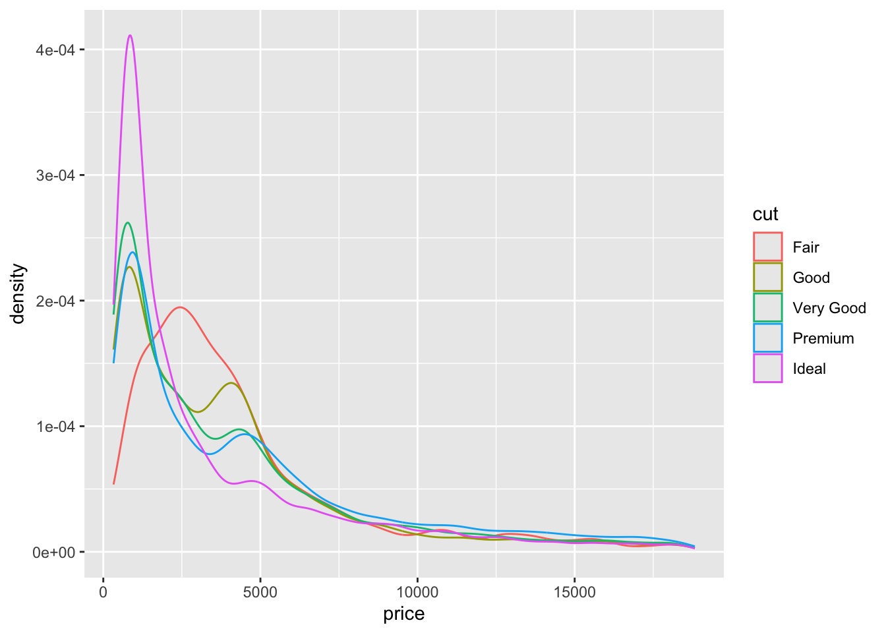
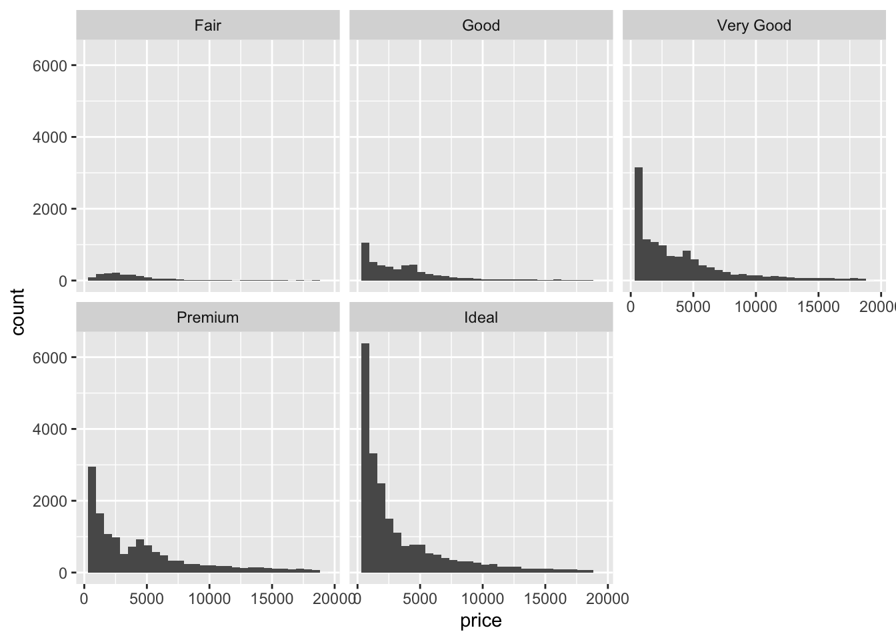

# Load packages and import data
library(ggplot2)
library(dplyr)
data(diamonds)
# A little bit of data wrangling code - let's not focus on this for now
diamonds <- diamonds %>%
mutate(
cut = factor(cut, ordered = FALSE),
color = factor(color, ordered = FALSE),
clarity = factor(clarity, ordered = FALSE)
)Simple linear regression: categorical predictor
Notes and in-class exercises
Notes
- You can download a template file to work with here.
- File organization: Save this file in the “Activities” subfolder of your “STAT155” folder.
Learning goals
By the end of this lesson, you should be able to:
- Write a model formula for a simple linear regression model with a categorical predictor using indicator variables
- Interpret the intercept and slope coefficients in a simple linear regression model with a categorical predictor
Readings and videos
Before class you should have read and/or watched:
- Reading: Section 3.9 in the STAT 155 Notes only up through section 3.9.1 Indicator Variables
- Videos:
Review
So far we’ve focused on modeling a quantitative response/outcome as a function of a single quantitative predictor.
\[ E[\text{price} \mid \text{weight\_grams}] = \beta_0 + \beta_1 \text{weight\_grams} \]
But when building models to explain why the outcome varies, we will likely have categorical predictors too. For example, the quality of the product might be encoded as “low” or “high”.
Using a model like
\[ E[\text{price} \mid \text{quality}] = \beta_0 + \beta_1 \text{quality} \]
doesn’t make much sense because what does \(\beta_1\,\text{quality}\) mean? How can we multiply a number by a word/category label? We can’t!
For this reason, we make use of indicator variables. An indicator variable is a binary variable that only takes the values 0 or 1.
- Example: turn the
qualityvariable into aqualityHighindicator variable:qualityHigh = 1if the quality of the product is “high”qualityHigh = 0if the quality of the product is “low”
Question: Alternatively, we could have turned quality variable into a qualityLow indicator variable. What would the qualityHigh and qualityLow indicator variables look like for the following 4 cases?
| price | quality | qualityHigh | qualityLow |
|---|---|---|---|
| 10 | low | ||
| 20 | high | ||
| 11 | low | ||
| 21 | high |
The model statement in terms of indicator variables would be:
\[ E[\text{price} \mid \text{quality}] = \beta_0 + \beta_1 \text{qualityHigh} \]
- Note: for brevity, we can write “quality” instead of “qualityHigh” in the expected value (E[…] part) because we’re using this to indicate that price depends on the quality variable as a whole rather than the specific indicator variables chosen.
- If we listed all of the indicator variables inside the expected value, this would get long when a categorical variable has 3 or more categories
Question: In terms of the \(\beta\) coefficients, what is the average price of a low quality product? What about a high quality product?
For categorical variables with more than 2 categories, we need to create multiple indicator variables. To do this we pick one category to be the reference category and create indicator variables for the other categories.
For example, if quality had “low”, “medium”, and “high” categories, we could pick “low” to be the reference category (conventional for the “first” category to be the reference) and create qualityMedium and qualityHigh indicator variables:
\[ E[\text{price} \mid \text{quality}] = \beta_0 + \beta_1 \text{qualityMedium} + \beta_2 \text{qualityHigh} \]
Question: In terms of the \(\beta\) coefficients, what is the average price of a low quality product? A medium quality product? A high quality product?
Exercises
Context: Today we’ll explore data on thousands of diamonds to understand how physical characteristics relate to price. Read in the data below.
For the first several exercises, our focus will be on the relationship between diamond price and cut.
Exercise 1: Get to know the data
Write R code to answer the following:
- How many cases and variables do we have? What does a case represent?
- What do the first few rows of the data look like?
- Construct and interpret two different visualizations of the
pricevariable. - Construct and interpret a visualization of the
cutvariable.
Exercise 2: Visualizations
Start by visualizing this relationship of interest, that between price and cut.
- The appropriate plot depends upon the type of variables we’re plotting. When exploring the relationship between a quantitative response (ridership) and a quantitative predictor (temperature), a scatterplot was an effective choice. After running the code below, explain why a scatterplot is not effective for exploring the relationship between ridership and our categorical
cutpredictor.
# Try a scatterplot
ggplot(diamonds, aes(y = price, x = cut)) +
geom_point()- Separately run each chunk below, with two plots. Comment (
#) on what changes in the code / output.
# Univariate boxplot
ggplot(diamonds, aes(y = price)) +
geom_boxplot()# ???
ggplot(diamonds, aes(y = price, x = cut)) +
geom_boxplot()# Univariate density plot
ggplot(diamonds, aes(x = price)) +
geom_density()# ???
ggplot(diamonds, aes(x = price, color = cut)) +
geom_density()# Univariate histogram
ggplot(diamonds, aes(x = price)) +
geom_histogram()# ???
ggplot(diamonds, aes(x = price)) +
geom_histogram() +
facet_wrap(~ cut)- Do you notice anything interesting about the relationship between price and cut? What do you think might be happening here?
Exercise 3: Numerical summaries
Let’s follow up our plots with some numerical summaries.
- To warm up, first calculate the mean
priceacross all diamonds.
diamonds %>%
___(mean(___))- To summarize the trends we observed in the grouped plots above, we can calculate the mean
pricefor each type ofcut. This requires the inclusion of thegroup_by()function:
# Calculate mean price by cut
diamonds %>%
group_by(cut) %>%
___(mean(___))Examine the group mean measurements, and make sure that you can match these numbers up with what you see in the plots.
Based on the results above, we can see that, on average, diamonds with a “Fair” cut tend to cost more than higher-quality cuts. Let’s construct a new variable named
cutFair, using on the following criteria:
cutFair= 1 if the diamond is of Fair cutcutFair= 0 otherwise (any other value of cut (Good, Very Good, Premium, Ideal))
diamonds <- diamonds %>%
mutate(cutFair=ifelse(___ == "Fair", __, __))Variables like cutFair that are coded as 0/1 to numerically indicate if a categorical variable is at a particular state are known as an indicator variable. You will sometimes see these referred to as a “binary variable” or “dichotomous variable”; you may also encounter the term “dummy variable” in older statistical literature.
- Now, let’s calculate the group means based on the new
cutFairindicator variable:
diamonds %>%
group_by(cutFair) %>%
summarize(mean(price))Exercise 4: Modeling trend using a categorical predictor with exactly 2 categories
Next, let’s model the trend in the relationship between the cutFair and price variables using a simple linear regression model:
# Construct the model
diamond_mod0 <- lm(price ~ cutFair, data = diamonds)
# Summarize the model
coef(summary(diamond_mod0))Compare these results to the output of exercise 3e. What do you notice? How do you interpret the intercept and cutFair coefficient terms from this model?
your answer here
Exercise 5: Modeling trend using a categorical predictor with >2 categories
Using a single binary predictor like the cutFair indicator variable is useful when there are two clearly delineated categories. However, the cut variable actually contains 5 categories! Because we’ve collapsed all non-Fair classifications into a single category (i.e. cutFair = 0), the model above can’t tell us anything about the difference in expected price between, say, Premium and Ideal cuts. The good news is that it is very straightforward to model categorical predictors with >2 categories. We can do this by using the cut variable as our predictor:
# Construct the model
diamond_mod <- lm(price ~ cut, data = diamonds)
# Summarize the model
coef(summary(diamond_mod))- Even though we specified a single predictor variable in the model, we are seeing 4 coefficient estimates–why do you think this is the case?
your answer here
NOTE: We see 4 indicator variables (for Good, Very Good, Premium, and Ideal), but we do not see cutFair in the model output. This is because Fair is the reference level of the cut variable (it’s first alphabetically). You’ll see below that it is, indeed, still in the model. You’ll also see why the term “reference level” makes sense!
- After examining the summary table output from the code chunk above, complete the model formula:
E[price | cut] = ___ +/- ___ cutGood +/- ___ cutVery Good +/- ___ cutPremium +/- ___ cutIdeal
Exercise 6: Making sense of the model
Recall our model: E[price | cut] = 4358.7578 - 429.8933 cutGood - 376.9979 cutVery Good + 225.4999 cutPremium - 901.2158 cutIdeal
Use the model formula to calculate the expected/typical price for diamonds of Good cut.
Similarly, calculate the expected/typical price for diamonds of Fair cut.
Re-examine these 2 calculations. Where have you seen these numbers before?!
Exercise 7: Interpreting coefficients
Recall that our model formula is not a formula for a line. Thus we can’t interpret the coefficients as “slopes” as we have before. Taking this into account and reflecting upon your calculations above…
Interpret the intercept coefficient (
4358.7578) in terms of the data context. Make sure to use non-causal language, include units, and talk about averages rather than individual cases.Interpret the
cutGoodandcutVery Goodcoefficients (-429.8933and-376.9979) in terms of the data context. Hint: where did you use these value in the prediction calculations above?
Exercise 8: Modeling choices (CHALLENGE)
Why do we fit this model in this way (using 4 indicator variables cutGood, cutVery Good, cutPremium, cutIdeal)? Instead, suppose that we created a single variable cutCat that gave each category a numerical value: 0 for Fair, 1 for Good, 2 for Very Good, 3 for Premium, and 4 for Ideal.
How would this change things? What are the pros and cons of each approach?
Reflection
Through the exercises above, you learned how to build and interpret models that incorporate a categorical predictor variable. For the benefit of your future self, summarize how one can interpret the coefficients for a categorical predictor.
Response: Put your response here.
Render your work
- Click the “Render” button in the menu bar for this pane (blue arrow pointing right). This will create an HTML file containing all of the directions, code, and responses from this activity. A preview of the HTML will appear in the browser.
- Scroll through and inspect the document to check that your work translated to the HTML format correctly.
- Close the browser tab.
- Go to the “Background Jobs” pane in RStudio and click the Stop button to end the rendering process.
- Navigate to your “Activities” subfolder within your “STAT155” folder and locate the HTML file. You can open it again in your browser to double check.
Additional Practice
Exercise 9: Diamond color
Consider modeling price by color.
- Before creating a visualization that shows the relationship between price and color, write down what you expect the plot to look like. Then construct and interpret an apporpriate plot.
- Compute the average price for each color.
- Fit an appropriate linear model with
lm()and display a short summary of the model. - Write out the model formula from the above summary.
- Which color is the reference level? How can you tell from the model summary?
- Interpret the intercept and two other coefficients from the model in terms of the data context.
Exercise 10: Diamond clarity
If you want more practice, repeat the steps from Exercise 8 for the clarity variable.
Solutions
Exercise 1: Get to know the data
- A case represents a single diamond.
- The distribution of price is right skewed with considerable high outliers. The right skew is evidenced by the mean price ($3932) being much higher than the median price ($2401).
- Most diamonds in this data are of Good cut or better. Ideal cut diamonds are the most common with each succesive grade being the next most common.
dim(diamonds)[1] 53940 10head(diamonds)# A tibble: 6 × 10
carat cut color clarity depth table price x y z
<dbl> <fct> <fct> <fct> <dbl> <dbl> <int> <dbl> <dbl> <dbl>
1 0.23 Ideal E SI2 61.5 55 326 3.95 3.98 2.43
2 0.21 Premium E SI1 59.8 61 326 3.89 3.84 2.31
3 0.23 Good E VS1 56.9 65 327 4.05 4.07 2.31
4 0.29 Premium I VS2 62.4 58 334 4.2 4.23 2.63
5 0.31 Good J SI2 63.3 58 335 4.34 4.35 2.75
6 0.24 Very Good J VVS2 62.8 57 336 3.94 3.96 2.48# Visualize price (outcome variable)
ggplot(diamonds, aes(x = price)) +
geom_histogram()`stat_bin()` using `bins = 30`. Pick better value with `binwidth`.
ggplot(diamonds, aes(y = price)) +
geom_boxplot()
diamonds %>%
summarize(mean(price), median(price), sd(price))# A tibble: 1 × 3
`mean(price)` `median(price)` `sd(price)`
<dbl> <dbl> <dbl>
1 3933. 2401 3989.# Visualize cut (predictor variable)
ggplot(diamonds, aes(x = cut)) +
geom_bar()
diamonds %>%
count(cut)# A tibble: 5 × 2
cut n
<fct> <int>
1 Fair 1610
2 Good 4906
3 Very Good 12082
4 Premium 13791
5 Ideal 21551Exercise 2: Visualizations
Start by visualizing this relationship of interest, that between price and cut.
- We just don’t see anything clearly on a scatterplot. With the small number of unique values of the predictor variable, all of the points are bunched up on each other.
# Try a scatterplot
ggplot(diamonds, aes(y = price, x = cut)) +
geom_point()
- Separately run each chunk below, with two plots. Comment (
#) on what changes in the code / output.
# Univariate boxplot
ggplot(diamonds, aes(y = price)) +
geom_boxplot()# Separate boxes by category
ggplot(diamonds, aes(y = price, x = cut)) +
geom_boxplot()
# Univariate density plot
ggplot(diamonds, aes(x = price)) +
geom_density()
# Separate density plots by category
ggplot(diamonds, aes(x = price, color = cut)) +
geom_density()
# Univariate histogram
ggplot(diamonds, aes(x = price)) +
geom_histogram()`stat_bin()` using `bins = 30`. Pick better value with `binwidth`.
# Separate histograms by category
ggplot(diamonds, aes(x = price)) +
geom_histogram() +
facet_wrap(~ cut)`stat_bin()` using `bins = 30`. Pick better value with `binwidth`.
- The relationship between price and cut seems to be opposite what we would expect. The diamonds with the best cut (Ideal) have the lowest average price, and the ones with the worst cut (Fair) are woth the most. Maybe something else is different between the diamonds with the best and worst cuts…size maybe?
Exercise 3: Numerical summaries
Let’s follow up our plots with some numerical summaries.
- Mean
priceacross all diamonds:
diamonds %>%
summarize(mean(price))# A tibble: 1 × 1
`mean(price)`
<dbl>
1 3933.- Mean
pricefor each type ofcut:
diamonds %>%
group_by(cut) %>%
summarize(mean(price))# A tibble: 5 × 2
cut `mean(price)`
<fct> <dbl>
1 Fair 4359.
2 Good 3929.
3 Very Good 3982.
4 Premium 4584.
5 Ideal 3458.Group means should reflect what you see in the plots (easiest to see in the boxplots)
Create our new
cutFairvariable:
diamonds <- diamonds %>%
mutate(cutFair=ifelse(cut == "Fair", 1, 0))- Calculate the group means based on this new variable
diamonds %>%
group_by(cutFair) %>%
summarize(mean(price))# A tibble: 2 × 2
cutFair `mean(price)`
<dbl> <dbl>
1 0 3920.
2 1 4359.Exercise 4: Modeling trend using a categorical predictor with exactly 2 categories
# Construct the model
diamond_mod0 <- lm(price ~ cutFair, data = diamonds)
# Summarize the model
coef(summary(diamond_mod0)) Estimate Std. Error t value Pr(>|t|)
(Intercept) 3919.6946 17.4367 224.795616 0.000000e+00
cutFair 439.0632 100.9269 4.350309 1.361951e-05The intercept is the expected value (mean) of the price for all diamonds with a cut quality that isn’t Fair (Good, Very Good, Premium, or Ideal, i.e. when cutFair = 0)–the same as we saw in exercise 3e.
- When we add the intercept and coefficient for
cutFair, we get3919.69 + 439.06 = 4358.75–this is the mean price for all diamonds with a Fair cut quality that we saw in exercise 3e! Therefore, the coefficient ofcutFair(439.06) is interpreted as the difference between the mean value of diamonds with a Fair cut quality and the mean value of diamonds with a higher cut quality.
Exercise 5: Modeling trend using a categorical predictor with >2 categories
# Construct the model
diamond_mod <- lm(price ~ cut, data = diamonds)
# Summarize the model
coef(summary(diamond_mod)) Estimate Std. Error t value Pr(>|t|)
(Intercept) 4358.7578 98.78795 44.122361 0.000000e+00
cutGood -429.8933 113.84940 -3.775982 1.595493e-04
cutVery Good -376.9979 105.16422 -3.584849 3.375707e-04
cutPremium 225.4999 104.39521 2.160060 3.077240e-02
cutIdeal -901.2158 102.41155 -8.799943 1.408406e-18We are seeing 4 coefficient estimates because each category is being assigned to a separate indicator variable–
cutGood= 1 whencut == "Good"and 0 otherwise,cutVery Good= 1 when `cut == “Very Good” and 0 otherwise, and so on.E[price | cut] = 4358.7578 - 429.8933 cutGood - 376.9979 cutVery Good + 225.4999 cutPremium - 901.2158 cutIdeal
Exercise 6: Making sense of the model
- Expected/typical price for diamonds of Good cut:
E[price | cut] = 4358.7578 - 429.8933 * 1 - 376.9979 * 0 + 225.4999 * 0 - 901.2158 * 0 = 4358.7578 - 429.8933 = $3928.865
predict(diamond_mod, newdata = data.frame(cut = "Good")) 1
3928.864 - Expected/typical price for diamonds of Fair cut:
E[price | cut] = 4358.7578 - 429.8933 * 0 - 376.9979 * 0 + 225.4999 * 0 - 901.2158 * 0 = $4358.7578
predict(diamond_mod, newdata = data.frame(cut = "Fair")) 1
4358.758 - These come from our group mean calculations in Exercise 3b! The predicted value for diamonds of Fair cut is also the same as what we obtained using the SLR model in exercise 4 with only a single
cutFairindicator variable.
Exercise 7: Interpreting coefficients
Recall that our model formula is not a formula for a line. Thus we can’t interpret the coefficients as “slopes” as we have before. Taking this into account and reflecting upon your calculations above…
The average price of a Fair cut diamonds is $4358.7578.
- Interpretation of
cutGoodcoefficient: On average, Good cut diamonds are worth $429.89 less than Fair cut diamonds. - Interpretation of
cutVery Goodcoefficient: On average, Very Good cut diamonds are worth $377.00 less than Fair cut diamonds.
- Interpretation of
Exercise 8: Modeling choices (CHALLENGE)
Why do we fit this model in this way (using 4 indicator variables cutGood, cutVery Good, cutPremium, cutIdeal)? Instead, suppose that we created a single variable cutCat that gave each category a numerical value: 0 for Fair, 1 for Good, 2 for Very Good, 3 for Premium, and 4 for Ideal.
- If we used 0-4 instead of creating indicator variables, we would be constraining the change from 0 to 1, from 1 to 2, etc. to always be of the same magnitude. That is, a 1 unit change in the cut variable would always have the same change in price in our model.
- Using separate indicator variables allows the difference between subsequent categories to be different, which allows our model to be a bit more nuanced. It is possible to take nuance too far though. For example, in our previous investigations of bikeshare data, we modeled ridership versus temperature. We treated temperature as a quantitative predictor. Imagine if we had created an indicator variable for each unique temperature in the data—that would be so many variables! Having so many variables creates a very complex model which can be hard to make sense of. (These ideas are addressed further in STAT 253: Statistical Machine Learning!)
Exercise 9: Diamond color
Consider modeling price by color.
- The best color diamonds are J, and worst are D. We would expect D diamonds to have the lowest price and increase steadily as we get to J. This is in fact what we see in the boxplots.
ggplot(diamonds, aes(x = color, y = price)) +
geom_boxplot()
diamonds %>%
group_by(color) %>%
summarize(mean(price))# A tibble: 7 × 2
color `mean(price)`
<fct> <dbl>
1 D 3170.
2 E 3077.
3 F 3725.
4 G 3999.
5 H 4487.
6 I 5092.
7 J 5324.- We fit a linear model and obtain the model formula: E[price | color] = 3169.95 - 93.20 colorE + 554.93 colorF + 829.18 colorG + 1316.72 colorH + 1921.92 colorI + 2153.86 colorJ
diamond_mod2 <- lm(price ~ color, data = diamonds)
coef(summary(diamond_mod2)) Estimate Std. Error t value Pr(>|t|)
(Intercept) 3169.95410 47.70694 66.446391 0.000000e+00
colorE -93.20162 62.04724 -1.502107 1.330752e-01
colorF 554.93230 62.38527 8.895246 6.004834e-19
colorG 829.18158 60.34470 13.740751 6.836340e-43
colorH 1316.71510 64.28715 20.481777 7.074714e-93
colorI 1921.92086 71.55308 26.860072 7.078041e-158
colorJ 2153.86392 88.13203 24.439060 3.414906e-131- Color D is the reference level because we don’t see its indicator variable in the model output.
- Interpretation of the intercept: Diamonds with D color cost $3169.95 on average.
- Interpretation of the
colorEcoefficient: Diamonds with E color cost $93.20 less than D color diamonds on average. - Interpretation of the
colorFcoefficient: Diamonds with F color cost $554.93 more than D color diamonds on average.
Exercise 10: Diamond clarity
We see the unexpected result that diamonds of better clarity (VS1 and higher) have lower average prices. In fact the best clarity diamonds (VVS1 and IF) have the lowest average prices. What might be going on? What if the most clear diamonds were also quite small…
ggplot(diamonds, aes(x = clarity, y = price)) +
geom_boxplot()
diamonds %>%
group_by(clarity) %>%
summarize(mean(price))# A tibble: 8 × 2
clarity `mean(price)`
<fct> <dbl>
1 I1 3924.
2 SI2 5063.
3 SI1 3996.
4 VS2 3925.
5 VS1 3839.
6 VVS2 3284.
7 VVS1 2523.
8 IF 2865.diamond_mod3 <- lm(price ~ clarity, data = diamonds)
coef(summary(diamond_mod3)) Estimate Std. Error t value Pr(>|t|)
(Intercept) 3924.1686910 144.5619 27.145247517 3.513547e-161
claritySI2 1138.8599147 150.2746 7.578526239 3.550711e-14
claritySI1 71.8324571 148.6049 0.483378837 6.288287e-01
clarityVS2 0.8207037 148.8672 0.005512992 9.956013e-01
clarityVS1 -84.7132999 150.9746 -0.561109670 5.747251e-01
clarityVVS2 -640.4316203 154.7737 -4.137858008 3.510944e-05
clarityVVS1 -1401.0540535 158.5401 -8.837224284 1.010097e-18
clarityIF -1059.3295848 171.8990 -6.162510636 7.210567e-10